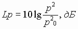
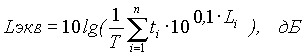

Утверждены Постановлением Госкомсанэпиднадзора РФ от 31 октября 1996 г. N 52 Дата введения - с момента утверждения
2.2.4. ФИЗИЧЕСКИЕ ФАКТОРЫ ПРОИЗВОДСТВЕННОЙ СРЕДЫ
2.1.8. ФИЗИЧЕСКИЕ ФАКТОРЫ ОКРУЖАЮЩЕЙ ПРИРОДНОЙ СРЕДЫ
ИНФРАЗВУК НА РАБОЧИХ МЕСТАХ, В ЖИЛЫХ И ОБЩЕСТВЕННЫХ ПОМЕЩЕНИЯХ И НА ТЕРРИТОРИИ ЖИЛОЙ ЗАСТРОЙКИСАНИТАРНЫЕ НОРМЫ
СН 2.2.4/2.1.8.583-96
1. Разработаны Научно-исследовательским институтом медицины труда Российской Академии медицинских наук (Суворов Г.А., Прокопенко Л.В., Кравченко О.К.), Санкт-Петербургской государственной медицинской академией им. И.И. Мечникова (Свидовый В.И., Нехорошев А.С.), Московским НИИ гигиены им. Ф.Ф. Эрисмана (Карагодина И.Л., Солдаткина С.А.), НИИ строительной физики (Осипов Г.Л., Веселовский М.Б.), Воронежской государственной медицинской академией им. Н.Н. Бурденко (Куралесин Н.А.).
2. Утверждены и введены в действие Постановлением Госкомсанэпиднадзора России от 31 октября 1996 г. N 52.
3. Введены взамен "Гигиенических норм инфразвука на рабочих местах" N 2274-80 и "Санитарных норм допустимых уровней инфразвука и низкочастотного шума на территории жилой застройки" СанПиН 4948-89.
ЗАКОН РСФСР "О САНИТАРНО-ЭПИДЕМИОЛОГИЧЕСКОМ БЛАГОПОЛУЧИИ НАСЕЛЕНИЯ""Санитарные правила, нормы и гигиенические нормативы (далее - санитарные правила) - нормативные акты, устанавливающие критерии безопасности и (или) безвредности для человека факторов среды его обитания и требования к обеспечению благоприятных условий его жизнедеятельности.
Санитарные правила обязательны для соблюдения всеми государственными органами и общественными объединениями, предприятиями и иными хозяйствующими субъектами, организациями и учреждениями, независимо от их подчиненности и форм собственности, должностными лицами и гражданами" (статья 3).
"Санитарным правонарушением признается посягающее на права граждан и интересы общества противоправное, виновное (умышленное или неосторожное) деяние (действие или бездействие), связанное с несоблюдением санитарного законодательства РСФСР, в том числе действующих санитарных правил...
Должностные лица и граждане РСФСР, допустившие санитарное правонарушение, могут быть привлечены к дисциплинарной, административной и уголовной ответственности" (статья 27).
1. Область применения
1.1. Настоящие Санитарные нормы устанавливают классификацию, нормируемые параметры и предельно допустимые уровни инфразвука на рабочих местах, а также допустимые уровни инфразвука в жилых и общественных помещениях и территории жилой застройки.
1.2. Гигиенические требования распространяются на вновь создаваемые, модернизируемые, закупаемые за рубежом и находящиеся в эксплуатации машины и оборудование, а также процессы, при которых возникает инфразвук, и предназначены для использования специалистами при конструировании, проведении экспертизы нормативно-технической документации (ГОСТов, ТУ, ТО и др.), оценки, сертификации и реализации продукции населению торговыми предприятиями.
1.3. Санитарные нормы являются обязательными для всех организаций и юридических лиц на территории Российской Федерации независимо от форм собственности, подчинения и принадлежности и физических лиц независимо от гражданства.
1.4. Ссылки на требования Санитарных норм должны быть учтены в Государственных стандартах и во всех нормативно-технических документах, регламентирующих конструктивные, технологические, сертификационные и эксплуатационные требования к машинам и оборудованию, а также при организации технологических процессов и производств.
1.5. Ответственность за выполнение требований Санитарных норм возлагается в установленном порядке на руководителей и должностных лиц предприятий, учреждений и организаций, а также граждан.
1.6. Контроль за выполнением Санитарных норм осуществляется органами и учреждениями Госсанэпиднадзора России в соответствии с Законом РСФСР "О санитарно-эпидемиологическом благополучии населения" от 19.04.91 и с учетом требований действующих санитарных правил и норм.
1.7. С утверждением настоящих правил утрачивают силу "Гигиенические нормы инфразвука на рабочих местах" N 2274-80, "Санитарные нормы допустимых уровней инфразвука и низкочастотного шума на территории жилой застройки" СанПиН 4948-89, "Методические указания для органов и учреждений санитарно-эпидемиологической службы по контролю за выполнением "Санитарных норм допустимых уровней инфразвука и низкочастотного шума на территории жилой застройки N 4948-89" N 4949-89.
2. Нормативные ссылки
2.1. Закон РСФСР "О санитарно-эпидемиологическом благополучии населения" от 19.04.91.
2.2. Закон Российской Федерации "Об охране окружающей природной среды" от 19.12.91.
2.3. Закон Российской Федерации "О защите прав потребителей" от 07.02.92.
2.4. Закон Российской Федерации "О сертификации продукции и услуг" от 10.06.93.
2.5. Положение о порядке разработки, утверждения, издания, введения в действие федеральных, республиканских и местных санитарных правил, а также о порядке действия на территории РСФСР общесоюзных санитарных правил, утвержденных Постановлением Совета Министров РСФСР от 01.07.91 N 625.
2.6. Постановление Государственного комитета санэпиднадзора РФ "Положение о порядке выдачи гигиенических сертификатов на продукцию" от 05.01.93 N 1.
3. Термины и определения
3.1. Инфразвук - звуковые колебания и волны с частотами, лежащими ниже полосы слышимых (акустических) частот - 20 Гц.
3.2. Общий (линейный) уровень звукового давления, дБ Лин - величина, измеряемая по шкале шумомера "линейная" или рассчитанная путем энергетического суммирования уровней звукового давления в октавных полосах частот без корректирующих октавных поправок.
3.3. Эквивалентный (по энергии) общий (линейный) уровень звукового давления, Lэкв. дБ Лин, данного непостоянного инфразвука - уровень постоянного широкополосного инфразвука, который имеет такое же среднеквадратичное звуковое давление, что и данный непостоянный инфразвук в течение определенного интервала времени.
4. Классификация инфразвука, воздействующего на человека
4.1. По характеру спектра инфразвук подразделяется на:
- широкополосный инфразвук, с непрерывным спектром шириной более одной октавы;
- тональный инфразвук, в спектре которого имеются слышимые дискретные составляющие. Гармонический характер инфразвука устанавливают в октавных полосах частот по превышению уровня в одной полосе над соседними не менее чем на 10 дБ.
4.2. По временным характеристикам инфразвук подразделяется на:
- постоянный инфразвук, уровень звукового давления которого изменяется за время наблюдения не более чем в 2 раза (на 6 дБ) при измерениях по шкале шумомера "линейная" на временной характеристике "медленно";
- непостоянный инфразвук, уровень звукового давления которого изменяется за время наблюдения не менее чем в 2 раза (на 6 дБ) при измерениях по шкале шумомера "линейная" на временной характеристике "медленно".
5. Гигиенические нормы инфразвука при воздействии его на работающих и население
5.1. Нормируемыми характеристиками постоянного инфразвука являются:
5.1.1. Уровни звукового давления (Lp) в октавных полосах со среднегеометрическими частотами 2, 4, 8 и 16 Гц, в дБ, определяемые по формуле:

, гдеp - среднеквадратичное значение звукового давления, Па;
po- исходное значение звукового давления в воздухе, равное 2*10-5 Па
5.1.2. Уровень звукового давления (при одночисловой оценке), измеренный по шкале шумомера "линейная", в дБ Лин (при условии, если разность между уровнями, измеренными по шкалам "линейная" и "А" на характеристике шумомера "медленно", составляет не менее 10 дБ).
5.2. Нормируемыми характеристиками непостоянного инфразвука являются эквивалентные по энергии уровни звукового давления (Lэкв.), в дБ, в октавных полосах частот со среднегеометрическими частотами 2, 4, 8 и 16 Гц и эквивалентный общий уровень звукового давления, в дБ Лин, определяемые по формуле:

, гдеТ - период наблюдения, ч.;
ti - продолжительность действия шума с уровнем Li, ч.;
n - общее число промежутков действия инфразвука;
Li - логарифмический уровень инфразвука в i-ый промежуток времени, дБ.
5.2.1. Эквивалентный уровень звукового давления может быть установлен при непосредственном инструментальном измерении или путем расчета по измеренному уровню и продолжительности воздействия в соответствии с Приложением.
5.3. В качестве дополнительной характеристики для оценки инфразвука (например, в случае тонального инфразвука) могут быть использованы уровни звукового давления в 1/3 октавных полосах со среднегеометрическими частотами 1,6; 2; 2,5; 3,15; 4; 5; 6,3; 8; 10; 12,5; 16 и 20 Гц; их следует пересчитывать в уровни в октавных полосах частот.
5.4. Предельно допустимые уровни инфразвука на рабочих местах, дифференцированные для различных видов работ, а также допустимые уровни инфразвука в жилых и общественных помещениях и на территории жилой застройки, приведены в таблице.
5.5. Для колеблющегося во времени и прерывистого инфразвука уровни звукового давления, измеренные по шкале шумомера "Лин", не должны превышать 120 дБ.
5.6. Для шумов, спектр которых охватывает инфразвуковой и слышимый диапазоны, измерение и оценка корректированного уровня звукового давления инфразвука является дополнительной к измерению и оценке шума в соответствии с "Санитарными нормами шума на рабочих местах, в помещениях жилых, общественных зданий, на территории жилой застройки" СН 2.2.4/2.1.8.562-96 и ГОСТом 12.1.003 "ССБТ. Шум. Общие требования безопасности".
5.7. При воздействии на работающих инфразвука с уровнями, превышающими нормативные, для предупреждения неблагоприятных эффектов должны применяться режимы труда, отдыха и другие меры защиты.
Таблица
ПРЕДЕЛЬНО ДОПУСТИМЫЕ УРОВНИ ИНФРАЗВУКА НА РАБОЧИХ МЕСТАХ, ДОПУСТИМЫЕ УРОВНИ ИНФРАЗВУКА В ЖИЛЫХ И ОБЩЕСТВЕННЫХ ПОМЕЩЕНИЯХ И НА ТЕРРИТОРИИ ЖИЛОЙ ЗАСТРОЙКИ
|
N п/п |
Назначение помещений |
Уровни звукового давления, дБ в октавных полосах со среднегеометрическими частотами, Гц |
Общий уровень звукового давления, дБ Лин |
|||
|
2 |
4 |
8 |
16 |
|||
|
1 |
1. Работы с различной степенью тяжести и напряженности трудового процесса в производственных помещениях и на территории предприятий: |
|
|
|
|
|
|
|
- работы различной степени тяжести |
100 |
95 |
90 |
85 |
100 |
|
- работы различной степени интеллектуально-эмоциональной напряженности |
95 |
90 |
85 |
80 |
95 |
|
|
2 |
Территория жилой застройки |
90 |
85 |
80 |
75 |
90 |
|
3 |
Помещения жилых и общественных зданий |
75 |
70 |
65 |
60 |
75 |
5.8. При воздействии инфразвука на человека в течение суток - в рабочее и нерабочее время, суммарную оценку воздействия следует проводить в соответствии с "Методическими указаниями по гигиенической оценке производственной и непроизводственной шумовой нагрузки".
5.9. Измерение и гигиеническая оценка инфразвука, а также профилактические мероприятия должны проводиться в соответствии с руководством 2.2.4/2.1.8-95 "Гигиеническая оценка физических факторов производственной и окружающей среды".
6. Список литературы
1. СН 2.2.4/2.1.8.562-96 "Санитарные нормы шума на рабочих местах, в помещениях жилых, общественных зданий и на территории жилой застройки".
2. ГОСТ 12.1.003-83 "ССБТ. Шум. Общие требования безопасности".
3. Руководство 2.2.4/2.1.8.000-95 "Гигиеническая оценка физических факторов производственной и окружающей среды".
4. Методические указания по гигиенической оценке производственной и непроизводственной шумовой нагрузки N 4435-87.
Приложение (обязательное)
ПОРЯДОК РАСЧЕТА ЭКВИВАЛЕНТНОГО УРОВНЯ ЗВУКОВОГО ДАВЛЕНИЯ ПРИ ВОЗДЕЙСТВИИ ИНФРАЗВУКА
В случае непостоянного инфразвукового воздействия производят расчет эквивалентного уровня (линейного или корректированного) давления инфразвука с учетом поправок (по таблице П.1) на время действия, вычитаемых из значения измеренного уровня.
|
|
Время воздействия, в часах |
||||||||
|
|
8 |
7 |
6 |
5 |
4 |
3 |
2 |
1 |
0,5 |
|
Поправка, дБ |
0 |
0,6 |
1,2 |
2 |
3 |
4,2 |
6 |
9 |
12 |